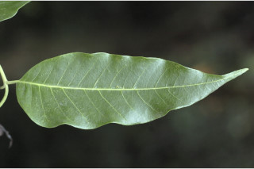
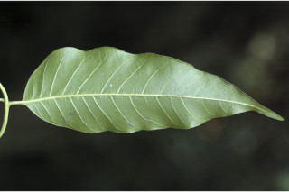
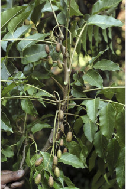
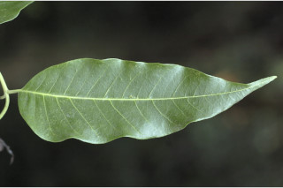
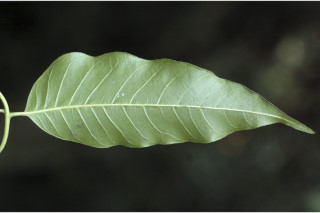
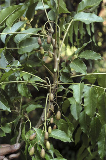
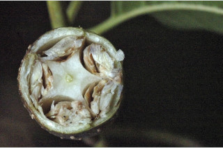
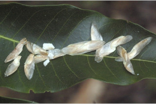
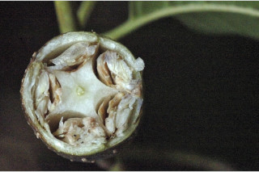
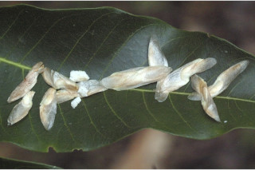

Deciduous trees up to 28 m tall.
28 ಮೀ. ಎತ್ತರದವರೆಗೆ ಬೆಳೆಯುವ ಎಲೆಯುದುರುವ ಮರಗಳು.
Deciduous trees up to 28 m tall.
இலையுதிர் மரம் 28 மீ. உயரம் வரை வளரக்கூடியது.
Bark reddish brown, exfoliating in large flakes when old; blaze deep pink with white streak.
ತೊಗಟೆ ಕೆಂಪು ಮಿಶ್ರಿತ ಕಂದು ಬಣ್ಣದಲ್ಲಿದ್ದು ಬಲಿತಾಗ ದೊಡ್ಡ ಗಾತ್ರದ ಚಕ್ಕೆಗಳಾಗಿ ಸುಲಿಯುತ್ತವೆ;ಕಚ್ಚು ಮಾಡಿದ ಜಾಗ ಬಿಳಿಯ ಗೆರೆಗಳ ಸಮೇತವಾಗಿದ್ದು ಕಡು ನಸುಗೆಂಪು ಬಣ್ಣ ಹೊಂದಿರುತ್ತದೆ.
Bark reddish brown, exfoliating in large flakes when old; blaze deep pink with white streak.
மரத்தின் பட்டை சிவப்பு ப்ரவுன் நிறமானது, முதிரும் போது பெரிய செதில்களாக உதிருபவை; உள்பட்டை பிங்க் நிறமானது மற்றும் வெள்ளை நிறமான கோடுகளுடையது.
Branchlets terete, lenticellate, glabrous.
ಎಳೆಯ ಕಿರುಕೊಂಬೆಗಳು ದುಂಡಾಗಿದ್ದು ಸೂಕ್ಷ್ಮ ವಾಯುವಿನಿಮಯ ಬೆಂಡು ರಂಧ್ರಗಳ ಸಮೇತವಿದ್ದು ರೋಮರಹಿತವಾಗಿರುತ್ತದೆ,
Branchlets terete, lenticellate, glabrous.
சிறியநுனிக்கிளைகள் குறுக்குவெட்டுத் தோற்றத்தில் வளையமானது, பட்டைத்துளைகள் (லெண்டிசெல்லேட்) உடையது, உரோமங்களற்றது.
Leaves compound, paripinnate, 23-90 cm long, clustered at twig ends; rachis terete, pulvinate, 60 cm or more, glabrous; petiolule 0.7-2.0 cm long; leaflets 6-15 pairs, alternate, subopposite or opposite, 5-15 x 2-6 cm, lanceolate to narrow ovate, apex caudate - acuminate and slightly curved, base asymmetric, margin entire, sometime crenate when young, chartaceous to subcoriaceous, glabrous, shining above, pale beneath; midrib flat above; secondary_nerves 12-16 pairs; tertiary_nerves broadly reticulate.
ಎಲೆಗಳು ಸಂಯುಕ್ತ, ಸಮ ಸಂಖ್ಯೆಯ ಗರಿಗಳನ್ನು ಹೊಂದಿರುತ್ತವೆ 23 ರಿಂದ 90 ಸೆಂ.ಮೀ ವರೆಗಿನ ಉದ್ದವನ್ನು ಹೊಂದಿದ್ದು ಕುಡಿಕೊಂಬೆಗಳ ತುದಿಯಲ್ಲಿ ಗುಂಪಾಗಿರುತ್ತವೆ;ನಡುಕಾಂಡ 60 ಸೆಂ.ಮೀ.ಅಥವಾ ಇನ್ನೂ ಹೆಚ್ಚಿನ ಉದ್ದವಿದ್ದು ಉಬ್ಬಿದ ಎಲೆ ಬುಡವನ್ನು ಹೊಂದಿರುತ್ತವೆ ಹಾಗೂ ರೋಮರಹಿತವಾಗಿರುತ್ತದೆ;; ಕಿರು ತೊಟ್ಟುಗಳು 0.7- 2.0 ಸೆಂ.ಮೀ. ಉದ್ದವಿರುತ್ತವೆ; ಕಿರುಪತ್ರಗಳು 6 – 15 ಜೋಡಿಗಳು ಇದ್ದು ಪರ್ಯಾಯ, ಉಪ-ಅಭಿಮುಖ ಅಥವಾ ಅಭಿಮುಖ ರೀತಿಯಲ್ಲಿ ಜೋಡಣೆಯಾಗಿರುತ್ತವೆ ಮತ್ತು 5-15 X2-6 ಸೆಂ. ಮೀ.ವರೆಗಿನ ಗಾತ್ರ, ಈಟಿಯಿಂದ ಹಿಡಿದು ಸಂಕುಚಿತ ಅಂಡದ ಆಕಾರ, ತುಸುವಾಗಿ ಬಾಗಿದ ಬಾಲರೂಪಿ ಕ್ರಮೇಣ ಚೂಪಾಗುವ ತುದಿ, ಅಸಮ್ಮಿತಿಯಾದ ಬುಡ, ನಯವಾದ ಕೆಲವು ವೇಳೆ ಎಳೆಯದಾಗಿದ್ದಾಗ ದುಂಡೇಣಿನ ಹಲ್ಲುಳ್ಳ ಅಂಚು,ಕಾಗದವನ್ನೋಲುವುದರಿಂದ ಹಿಡಿದು ಉಪ-ಚರ್ಮದವರೆಗಿನ ಮೇಲ್ಮೈ ಹೊಂದಿದ್ದು ರೋಮರಹಿತವಾಗಿರುತ್ತವೆ,ಪತ್ರದ ಮೇಲ್ಭಾಗ ಹೊಳಪಿನಿಂದ ಕೂಡಿದ್ದು ತಳಭಾಗ ಮಸುಕಾಗಿರುತ್ತದೆ; ಮಧ್ಯನಾಳ ಪತ್ರದ ಮೇಲ್ಭಾಗದಲ್ಲಿ ಚಪ್ಪಟೆಯಾಗಿರುತ್ತದೆ; ಎರಡನೇ ದರ್ಜೆಯ ನಾಳಗಳು 12 – 16 ಜೋಡಿಗಳಿರುತ್ತವೆ;ಮೂರನೇ ದರ್ಜೆಯ ನಾಳಗಳು ವಿಶಾಲ ಜಾಲಬಂಧ ನಾಳ ವಿನ್ಯಾಸದಲ್ಲಿರುತ್ತವೆ.
Leaves compound, paripinnate, 23-90 cm long, clustered at twig ends; rachis terete, pulvinate, 60 cm or more, glabrous; petiolule 0.7-2.0 cm long; leaflets 6-15 pairs, alternate, subopposite or opposite, 5-15 x 2-6 cm, lanceolate to narrow ovate, apex caudate - acuminate and slightly curved, base asymmetric, margin entire, sometime crenate when young, chartaceous to subcoriaceous, glabrous, shining above, pale beneath; midrib flat above; secondary_nerves 12-16 pairs; tertiary_nerves broadly reticulate.
கூட்டிலை, இரட்டைபடை சிறகுவடிவக்கூட்டிலை (பேரிப்பின்னேட்), 23-90 செ.மீ. நீளமானது, சிறுகிளைகளின் நுனியில் இலைகள் கூட்டமாக மற்றும் நெருக்கமாக காணப்படும்; மத்தியகாம்பு குறுக்குவெட்டுத் தோற்றத்தில் வளையமானது, பல்வினேட், 60 செ.மீ. அல்லது அதைவிட நீளமானது, உரோமங்களற்றது; சிற்றிலைக்காம்பு 0.7-2.0 செ.மீ. நீளமானது; சிற்றிலைகள் 6-15 ஜோடிகள், மாற்றுஅடுக்கமானவை, கிட்டத்தட்ட எதிரடுக்கமானவை அல்லது எதிரடுக்கமானவை, 5-15 X 2-6 செ.மீ., ஈட்டி வடிவானது முதல் குறுகிய முட்டை வடிவானது, அலகின் நுனி வால்-அதிக்கூரியது மற்றும் திருகியது, அலகின் தளம் சமமற்றது, அலகின் விளிம்பு முழுமையானது, இளம்பருவத்தில் சிலசமயங்களில் பிறை போன்ற பற்களுடையது, சார்ட்டேசியஸ் முதல் சப்கோரியேசியஸ், உரோமங்களற்றது, அலகின் மேற்பரப்பு பளபளப்பானது, கீழ்பரப்பு வெளிறிய நிறமானது; மையநரம்பு மேற்பரப்பில் அலகின் பரப்பிற்கு சமமானது; இரண்டாம் நிலை நரம்புகள் 12-16 ஜோடிகள்; மூன்றாம் நிலை நரம்புகள் அகன்ற வலைப்பின்னல் போன்றவை.
Inflorescence terminal panicles, drooping; flowers white.
ಪುಷ್ಪಮಂಜರಿಗಳು ತುದಿಯಲ್ಲಿದ್ದು ಪುನರಾವೃತ್ತಿಯಾಗಿ ಕವಲೊಡೆಯುವ ಮಧ್ಯಾಭಿಸರ ಮಾದರಿಯಲ್ಲಿದ್ದು ಜೋತಾಡುತಿರುತ್ತವೆ; ಹೂಗಳು ಬಿಳಿ ಬಣ್ಣದವು.
Inflorescence terminal panicles, drooping; flowers white.
மஞ்சரி தண்டின் நுனியில் காணப்படும் பேனிக்கிள், தெங்கியவை; மலர்கள் வெள்ளை நிறமானது.
Capsule, elliptic, 5-valved, to 2 cm long, with white patches; seeds many, papery winged.
ಸಂಪುಟ ಫಲ ಅಂಡವೃತ್ತದ ಆಕಾರದಲ್ಲಿದ್ದು 5- ಕವಾಟಗಳು ಮತ್ತು ಬಿಳಿ ಮಚ್ಚೆಗಳ ಸಮೇತವಿದ್ದು 2 ಸೆಂ.ಮೀ. ಉದ್ದವಿರುತ್ತದೆ;ಬೀಜಗಳು ಹಲವಾರು,ಕಾಗದ ಮಾದರಿಯ ರೆಕ್ಕೆಯನ್ನು ಹೊಂದಿರುತ್ತದೆ.
Capsule, elliptic, 5-valved, to 2 cm long, with white patches; seeds many, papery winged.
வெடிகனி (கேப்சியூல்), நீள்வட்ட வடிவானது, 5-அறைகளுடையது, 2 செ.மீ. நீளமானது, ஆங்காங்கே வெள்ளை நிறமானது; விதைகள் எண்ணற்றவை, தாள் போன்ற சிறகுடையது.


 





 


